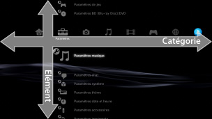
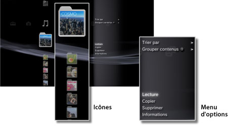
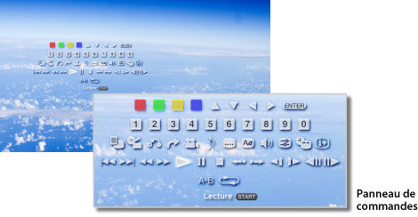

À propos du menu XMB™ > À propos du menu XMB™ (XrossMediaBar)
À propos du menu XMB™ (XrossMediaBar)
Utilisation du menu XMB™
Le système PS3™ possède une interface utilisateur appelée XMB™ (XrossMediaBar). La ligne horizontale affiche les fonctionnalités du système par catégories et la colonne verticale affiche les éléments qui peuvent être effectués sous chaque catégorie.

| Touches de navigation | Pour sélectionner une catégorie ou un élément. |
|---|---|
Touche  |
Pour confirmer l'option sélectionnée. |
Touche  |
Pour annuler une opération. |
Touche  |
Pour afficher le menu d'options / panneau de configuration. |
| Touche PS | Afficher le menu XMB™. |
Lecture de contenu
À partir du menu XMB™, sélectionnez le contenu sur le disque ou le support de stockage, puis appuyez sur la touche . Pour arrêter la lecture, appuyez sur la touche .
Conseil
Vous devez disposer d'un adaptateur USB approprié (non fourni) pour utiliser un support de stockage avec certains modèles de systèmes PS3™.
Panneau d'informations
Le panneau d'informations situé dans le coin supérieur droit de l'écran contient des informations telles que le nombre d'Amis en ligne, le signalement de nouveaux messages et les dernières informations disponibles sous [Nouveautés].

(1) |
Avatar * |
|---|---|
(2) |
Nombre d'Amis en ligne * |
(3) |
Informations relatives au nouveau chat textuel * |
(4) |
Informations relatives aux nouveaux messages |
(5) |
Date et heure |
(6) |
Icône Occupé |
(7) |
Informations disponibles sous [Nouveautés]* |
* S'affiche uniquement lorsque vous êtes connecté à PSNSM.
Utilisation du menu d'options
Sélectionnez une icône dans le menu XMB™, puis appuyez sur la touche pour afficher le menu d'options. Appuyez sur la touche pour afficher ou masquer le menu d'options.

Éléments du menu d'options
Les éléments du menu d'options varient selon la catégorie.
| Lecture / Démarrer / Visualiser | Pour lire le contenu. |
|---|---|
| Retirer le disque | Pour éjecter le disque. |
| Supprimer | Pour supprimer le contenu. |
| Copier | Pour copier du contenu sur le stockage système ou le support de stockage.*1 |
| Informations | Pour afficher des informations sur le contenu. Certaines informations comme le nom peuvent être modifiées. |
| Ajouter à la liste de lecture | Pour ajouter du contenu à une liste de lecture. |
| Afficher tout | Pour afficher tous les dossiers enregistrés sur un support de stockage ou sur un périphérique de stockage de masse USB.*1 |
| Trier par | Pour trier les éléments du contenu par nom, date, etc. |
| Grouper contenus | Pour modifier la méthode de regroupement (par album, par format ou selon d'autres options).*2 |
| Suppression multiple | Pour sélectionner plusieurs éléments de contenu et les supprimer simultanément. |
| Copie multiple | Pour sélectionner plusieurs éléments de contenu et les copier simultanément. |
| *1 |
Vous devez disposer d'un adaptateur USB approprié (non fourni) pour utiliser un support de stockage avec certains modèles de systèmes PS3™. |
|---|---|
| *2 |
Le contenu qui ne possède aucune des informations requises pour le regroupement est classé dans un dossier [Inconnu(e)]. Certains contenus ne peuvent pas être regroupés. |
Utilisation du panneau de configuration
Pendant la lecture du contenu, appuyez sur la touche pour afficher le panneau de commandes. Appuyez sur la touche pour afficher ou masquer le panneau de commandes. Les éléments du panneau de commandes varient en fonction du contenu lu.

Utilisation simultanée de plusieurs fonctionnalités
Les utilisateurs peuvent utiliser simultanément plusieurs fonctionnalités. Par exemple, vous pouvez afficher des images sous  (Photo) ou accéder à Internet sous
(Photo) ou accéder à Internet sous  (Réseau) tout en écoutant de la musique sous
(Réseau) tout en écoutant de la musique sous  (Musique).
(Musique).
Exemple : afficher des images sous (Photo) tout en écoutant de la musique sous (Musique)
1. |
Lire de la musique sous |
|---|---|
2. |
Appuyez sur la touche PS. |
3. |
Sélectionnez les images que vous souhaitez afficher sous |
Conseils
- Vous ne pouvez pas lire du contenu (Musique) et utiliser d'autres fonctionnalités pendant la lecture d'un Super Audio CD ou lorsque
 (Paramètres) >
(Paramètres) >  (Paramètres musique) > [Fréquence de sortie] est réglé sur [44,1/88,2/176,4 kHz].
(Paramètres musique) > [Fréquence de sortie] est réglé sur [44,1/88,2/176,4 kHz]. - En fonction du type de contenu affiché, certaines fonctionnalités risquent de ne pas être disponibles alors qu'elles sont habituellement utilisables simultanément.
Avis
Les Super Audio CD ne peuvent pas être lus sur certains systèmes PS3™. Pour plus de détails, consultez la section [Types de disques lisibles].